EvoRec: A Unified Self-Evolving
Agentic Recommender with Dynamic Reflection Trees
EvoRec · Reflection-Driven Self-Evolution
Kuaishou TechnologyKuaishou Local Services Ads Recommendation Foundation Model Team
▤ Paper⌘ Code
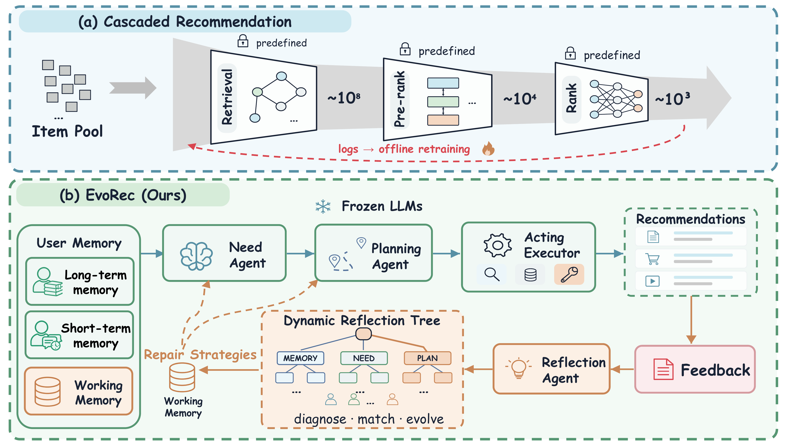
Case Study
An anonymized real episode: follow how user evidence becomes six local-service needs, two recall routes, a missed conversion, and an ERROR-NEED repair.
Simulated case data
City: Lower-tier city
Family: Parent
Compares prices
Prefers installment offers
Financial services
Automobile services
Price comparison
Local provider discovery
Verified user-level repairs
Current episode context
Active evidenceRecent P3S sequence
Current taskInfer prioritized local-service needs
Repairs come from prior reflection, not system initialization.Source: Dynamic Reflection Tree · Status: Verified
Long-term MemoryUser profile & stable habitsProfile · preferences · demand · intent · click to expand⌄
31–40-year-old working mother in corporate finance, living in Jianshui, Yunnan; quality-oriented and balances family, career, and aspirational consumption.
Strong: short dramas, cars, and finance · Medium: child education · Weak: entertainment; prefers comeback and family-ethics stories.
Value-conscious family shopper with paid short-drama habits, skincare brand loyalty, and content-driven or impulsive purchases.
Medical care · financial services · auto sales/service · local dining · beauty and nail care.
Throat diseases · score 3
09-14 22:07 · P3S · SID …9248Debt relief through rapid-marriage service
09-14 10:27 · P3S · SID …1578Guidance for resolving a frozen bank card
09-13 15:28 · P3S · SID …2555Used-car trade-in and subsidy information
09-13 13:40 · P3S · SID …4203Professional marriage-law consultation
09-13 00:16 · P3S · SID …3728Eye-care and cosmetic treatment process
Working Memory
Current recommendation episodeActive evidence: recent P3S sequence
Pending output: prioritized local-service needs
AgentNeed
Inference
Inference
Inferred needs
HighENT clinicExplicit search + click257
MedBeauty eye-careSingle direct signal172
MedUsed-car tradingSingle direct signal171
HighMarriage legal serviceRepeated evidence257
HighFinancial lendingRepeated evidence257
LowShort-drama contentLong-term interest only86
Route 01Behavior ContinuationContinue demonstrated interests
Success1,800 returned
Budget · 1,800Route 02Need SatisfactionPriority-weighted allocation · 3 : 2 : 1
Success1,200 returned
Budget · 1,200Planning AgentAllocate · Select · FuseBC 60% · NS 40%
Planned Configurationfrom Planning Agent
60% of budget · 1,800
Item-CFUser-CFEmbedding
40% of budget · 1,200
EmbeddingBM25OneReason
Acting ExecutorExecute retrieval and fuse results deterministically.
Route 01 · Behavior Continuation
Item-CFUser-CFEmbedding
Retrieve Top-K per tool
↓
RRF Fusion (α₁)
↓
Top-N candidates1,800 items🍲 🚗 👤 …
Route 02 · Need Satisfaction
EmbeddingBM25OneReason
Retrieve Top-K per tool
↓
RRF Fusion (α₂)
↓
Top-N candidates1,200 items🏥 👁 🚙 …
Final Recommendations
After shared ranking fusion- ENT clinic near youNS
- Beauty eye-careNS
- Used-car tradingNS
- Local restaurantBC
- Financial lendingNS
Merge & RankShared pre-ranking and ranking models→
Available retrieval tools
Assign to BCItem-CFUser-CFEmbedding
Assign to NSEmbeddingBM25OneReason
→
Candidate mergeSnake-order interleaving3,000 recalled · deduplicate lists
→
Rank
Base fixedSASRec αTwo-Tower 1−α
Recommendation outcome
- BC1,800 candidatesSuccess
- NS1,200 candidatesSuccess
- Σ3,000 returnedRanked
- ···
- ×Deposit-free phone rentalMissed by both routesSuccessfully recalled · Rank 23
Dynamic Reflection TreeMatch the observed failure to a reusable error pattern
Observed feedbackConverted item is absent from the ranked list
↓
ERROR-MEMORYERROR-NEEDERROR-PLANERROR-EXEC
↓
Evidence missingERROR-NEED-001Evidence present but need omittedPriority mismatch
Matched strategyCross-check latent acquisition needs before retrieval planning
ERROR-NEED-001Evidence present but omittedMissing need: low-threshold phone rentalRepair: jointly model cash-flow pressure, price sensitivity, and durable-goods acquisition.Repair inserted into Need Agent and Plan · ready to replayReplay verified · repaired recommendation succeeds
1Reflection NodeERROR-NEED-001
Recover the omitted phone-rental need
→
2Working MemoryWrite repair evidence
Cash-flow pressure · price sensitivity
→
3Need AgentReason again
Infer low-threshold phone rental
→
4Re-runRetrieve & Rank
Execute the repaired plan
→
✓Correct ResultSuccessfully recalled
Phone rental · Rank 23
Memory contextLong-term profile, short-term behavior, and working context jointly support need inference.
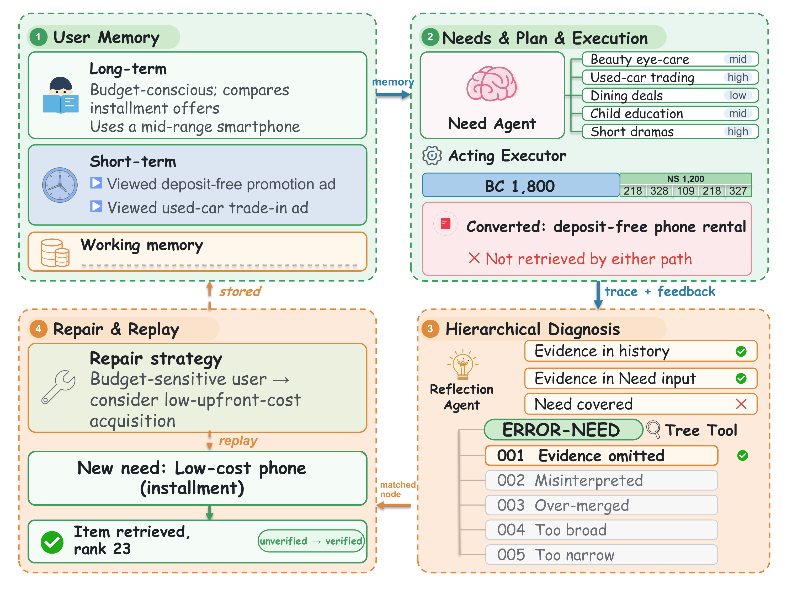
Abstract
Conventional recommender systems follow cascaded retrieval, pre-ranking, and ranking pipelines with predefined models and offline-optimized configurations, limiting their ability to adapt to evolving user needs and observed outcomes. Recent agentic recommenders introduce reasoning and tool use but largely focus on isolated stages, lacking both end-to-end decision control and systematic reflection on recommendation failures.
We propose EvoRec, a unified agentic recommendation framework with dynamic reflection that integrates end-to-end autonomous recommendation with reflection-driven self-evolution. A Need Agent infers structured needs from user memory, a Planning Agent adaptively allocates retrieval budgets and selects tools and ranking-fusion weights, and an Acting Executor deterministically executes the plan. A Dynamic Reflection Tree then localizes failures, generates personalized repairs, verifies them through replay, and evolves reusable strategies without updating agent parameters. EvoRec improves Hit@50 by 15.7% over the strongest baseline; a seven-day online A/B test increases advertising revenue by 4.6% and CTCVR by 3.5%.
Method
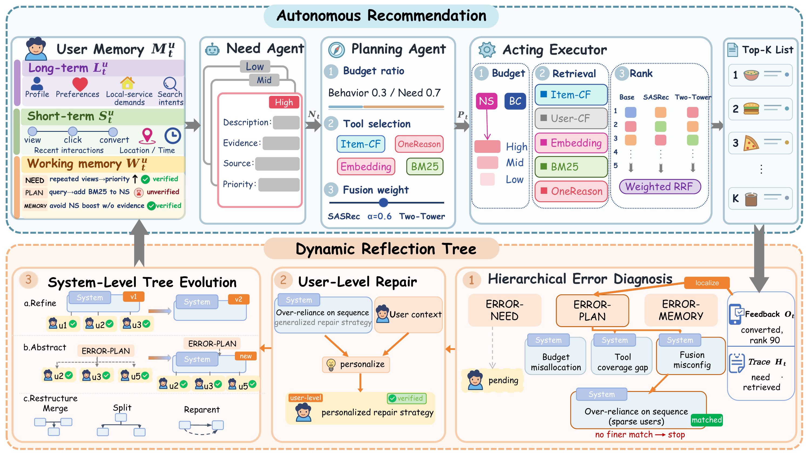
Results
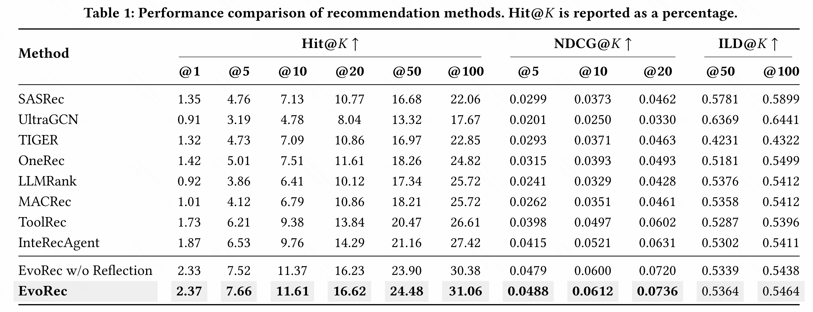
Online Evaluation
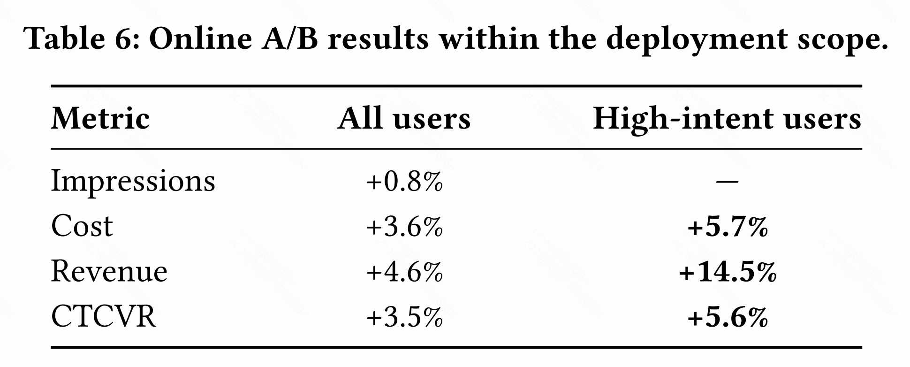
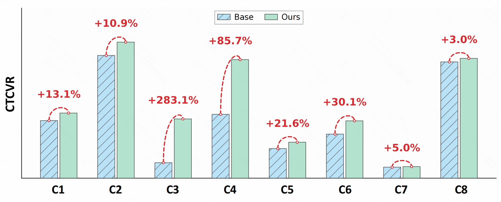
Ablations & Analysis
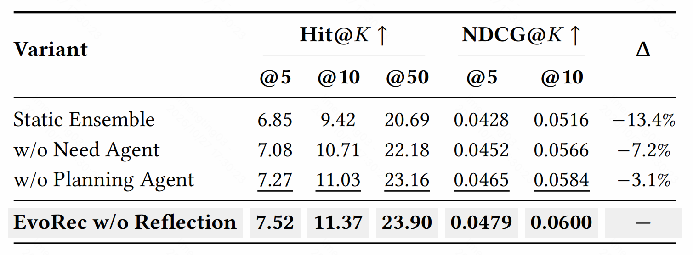
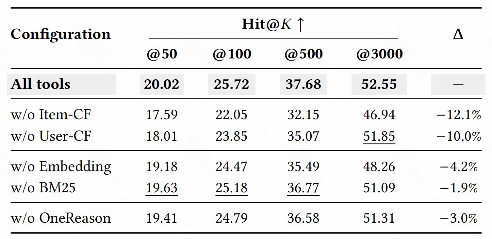
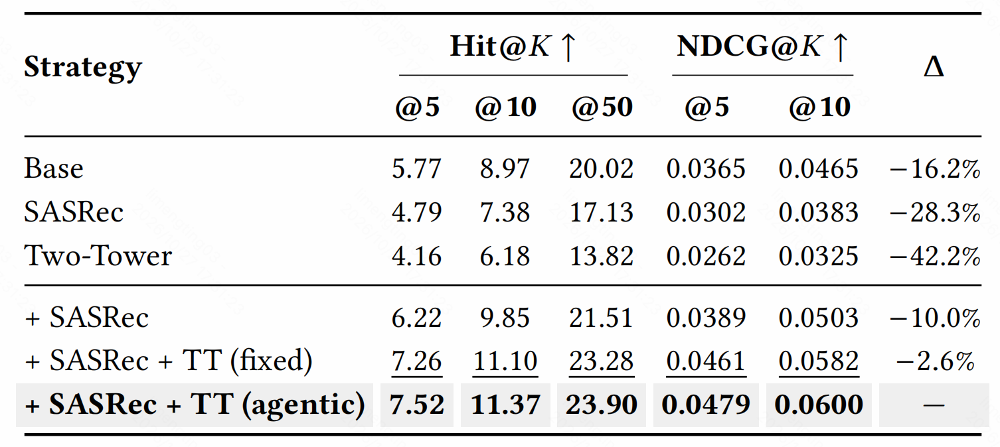
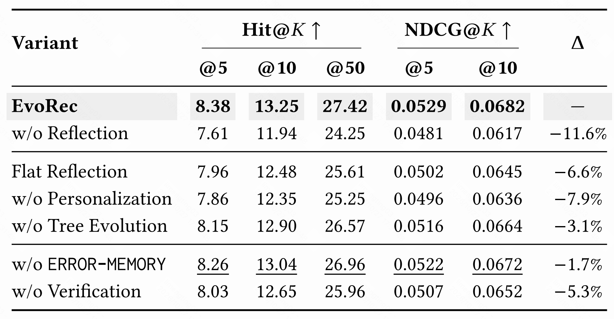
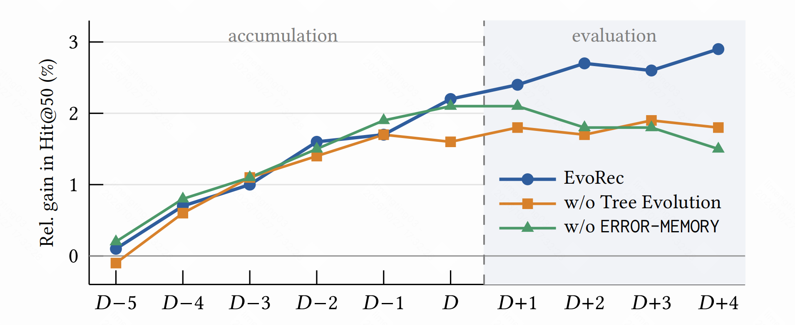
Contact
Contact
Please contact us.
Kuaishou Local Services Ads Recommendation Foundation Model TeamFirst authorMengting Limengtingli000@gmail.com
Team leaderHao Jiangjianghao11@kuaishou.com
BibTeX
@misc{li2027evorec,
title = {EvoRec: A Unified Self-Evolving Agentic Recommender with Dynamic Reflection Trees},
author = {Li, Mengting and Zhang, Long and Jiang, Hao and Yu, Sheng and Pan, Fei and Jiang, Peng},
year = {2027}
}